Abstract
Recently, great progress has been made in video generation technology, attracting the widespread attention of scholars. To apply this technology to downstream applications under resource-constrained conditions, researchers often fine-tune pre-trained models based on parameter-efficient tuning methods such as Adapter or Lora. Although these methods can transfer source domain knowledge to the target domain, fewer training parameters lead to poor fitting ability, and the source domain knowledge may cause the inference process to deviate from the target domain.
In this paper, we argue that under limited computing resources, training a smaller video generation model from scratch using only million-level samples can outperform parameter-efficient tuning on larger models in downstream applications: the core lies in the effective utilize of data and curriculum strategy . Take animated sticker generation (ASG) as an example, we construct a discrete frame generation network for stickers with low frame rates, ensuring that its parameters meet the requirements of model training under limited resources. In order to provide data support for models trained from scratch, we come up with a dual-mask based data utilization strategy, which manages to improve the availability and expand the diversity of limited data. To facilitate convergence under dual-mask situation, we propose a difficulty-adaptive curriculum learning method, which decomposes the sample entropy into static and adaptive components so as to obtain samples from easy to difficult. The proposed resource-efficient dual-mask training framework is quantitatively and qualitatively superior to efficient-parameter tuning methods such as I2V-Adapter and SimDA on the ASG task, verifying the feasibility of our method on downstream tasks under limited resources.
Method
Exemplary results of animated sticker generation using our proposed approach, RDTF. Our method performs well on different generation tasks: (top) Text&image to GIF, (middle) Prediction, (down) Interpolation. Gray boxes indicate text or visual guidance.
An overview of resource-efficient multi-task training framework. We adopt a model size that can be tolerated under constrained resources and propose a spatio temporal interaction layer to model the discreteness between animated stickers. Furthermore, the condition mask and loss mask are designed to enable the model can effectively utilize data through multi-task and short-frame data learning, and the curriculum learning is applied to improve training of resource-constrained model.
Compare to Other Methods
| Src Img | Matting | SAM | SAM2 | LayerDiffusion | Ours | |
| Case1 RGB | 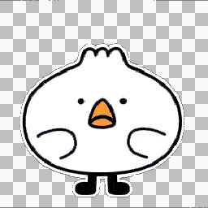 | 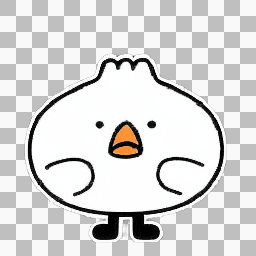 | ||||
| Case1 Alpha | 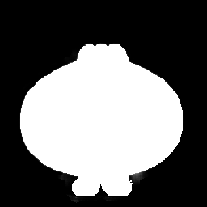 | 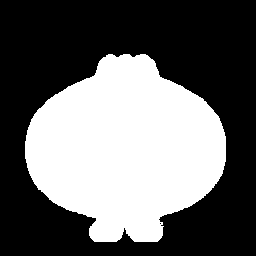 | 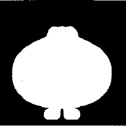 | 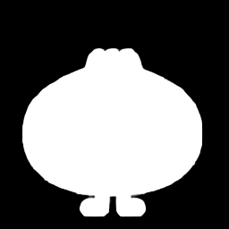 | ||
| Case2 RGB |  |
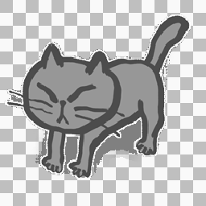 |  |
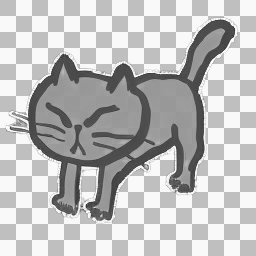 | 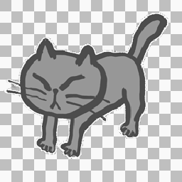 | |
| Case2 Alpha | 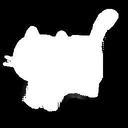 |  |
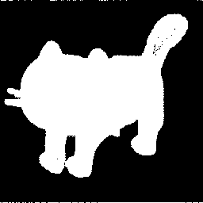 | 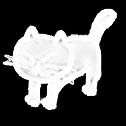 | ||
| Case3 RGB | ||||||
| Case3 Alpha |  |
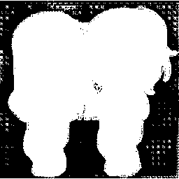 | 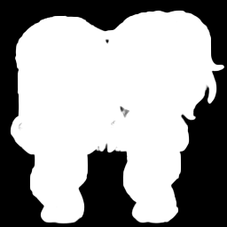 | |||
| Case4 RGB | 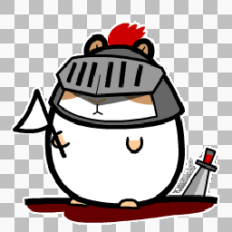 | 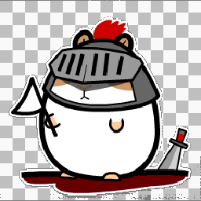 | ||||
| Case4 Alpha | 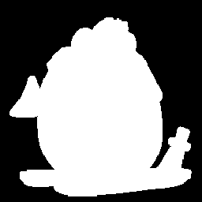 | 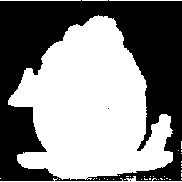 | 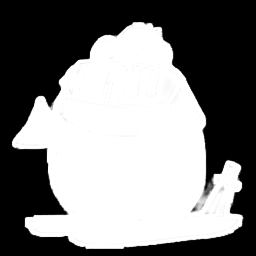 |
BibTeX
If you use our work in your research, please cite:
@misc{anonymous2024ILDiff,
title={ILDiff: Generate Transparent Animated Stickers by Implicit Layout Distillation},
author={Anonymous},
archivePrefix={arXiv},
primaryClass={cs.CV}}